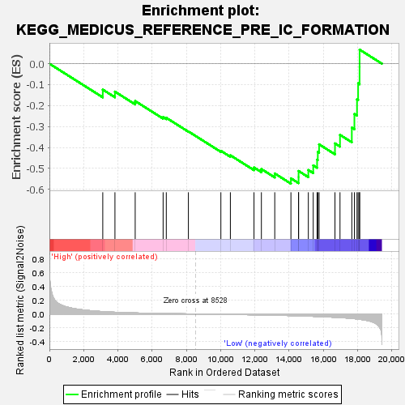
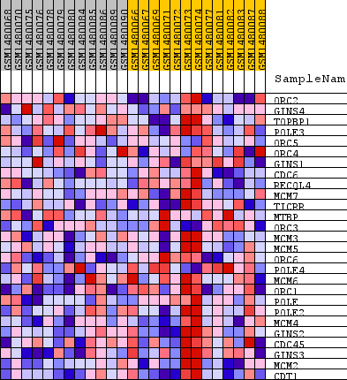
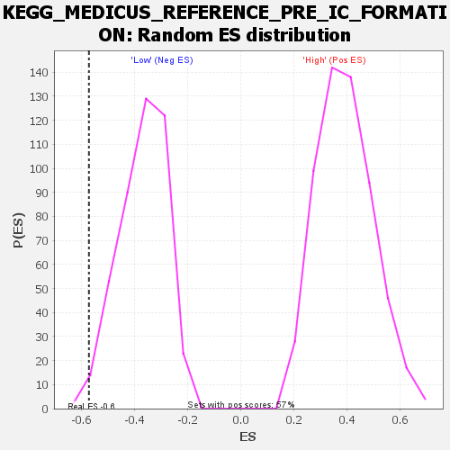

| Dataset | WG6v3.CYGB.cls#High_versus_Low.CYGB.cls#High_versus_Low_repos |
| Phenotype | CYGB.cls#High_versus_Low_repos |
| Upregulated in class | Low |
| GeneSet | KEGG_MEDICUS_REFERENCE_PRE_IC_FORMATION |
| Enrichment Score (ES) | -0.57296985 |
| Normalized Enrichment Score (NES) | -1.5430729 |
| Nominal p-value | 0.011574074 |
| FDR q-value | 0.16243061 |
| FWER p-Value | 0.934 |

| SYMBOL | TITLE | RANK IN GENE LIST | RANK METRIC SCORE | RUNNING ES | CORE ENRICHMENT | |
|---|---|---|---|---|---|---|
| 1 | ORC2 | ORC2 | 3117 | 0.035 | -0.1238 | No |
| 2 | GINS4 | GINS4 | 3828 | 0.025 | -0.1335 | No |
| 3 | TOPBP1 | TOPBP1 | 5011 | 0.015 | -0.1784 | No |
| 4 | POLE3 | POLE3 | 6642 | 0.007 | -0.2553 | No |
| 5 | ORC5 | ORC5 | 6828 | 0.006 | -0.2585 | No |
| 6 | ORC4 | ORC4 | 8119 | 0.001 | -0.3236 | No |
| 7 | GINS1 | GINS1 | 10016 | -0.005 | -0.4162 | No |
| 8 | CDC6 | CDC6 | 10571 | -0.007 | -0.4375 | No |
| 9 | RECQL4 | RECQL4 | 11951 | -0.012 | -0.4958 | No |
| 10 | MCM7 | MCM7 | 12383 | -0.014 | -0.5031 | No |
| 11 | TICRR | TICRR | 13164 | -0.018 | -0.5244 | No |
| 12 | MTBP | MTBP | 14108 | -0.024 | -0.5476 | Yes |
| 13 | ORC3 | ORC3 | 14554 | -0.027 | -0.5415 | Yes |
| 14 | MCM3 | MCM3 | 14555 | -0.027 | -0.5125 | Yes |
| 15 | MCM5 | MCM5 | 15125 | -0.032 | -0.5078 | Yes |
| 16 | ORC6 | ORC6 | 15411 | -0.034 | -0.4859 | Yes |
| 17 | POLE4 | POLE4 | 15636 | -0.036 | -0.4586 | Yes |
| 18 | MCM6 | MCM6 | 15678 | -0.037 | -0.4214 | Yes |
| 19 | ORC1 | ORC1 | 15753 | -0.038 | -0.3851 | Yes |
| 20 | POLE | POLE | 16681 | -0.049 | -0.3808 | Yes |
| 21 | POLE2 | POLE2 | 16975 | -0.053 | -0.3399 | Yes |
| 22 | MCM4 | MCM4 | 17665 | -0.065 | -0.3056 | Yes |
| 23 | GINS2 | GINS2 | 17816 | -0.069 | -0.2402 | Yes |
| 24 | CDC45 | CDC45 | 17969 | -0.073 | -0.1702 | Yes |
| 25 | GINS3 | GINS3 | 18033 | -0.075 | -0.0939 | Yes |
| 26 | MCM2 | MCM2 | 18118 | -0.077 | -0.0155 | Yes |
| 27 | CDT1 | CDT1 | 18120 | -0.077 | 0.0671 | Yes |

